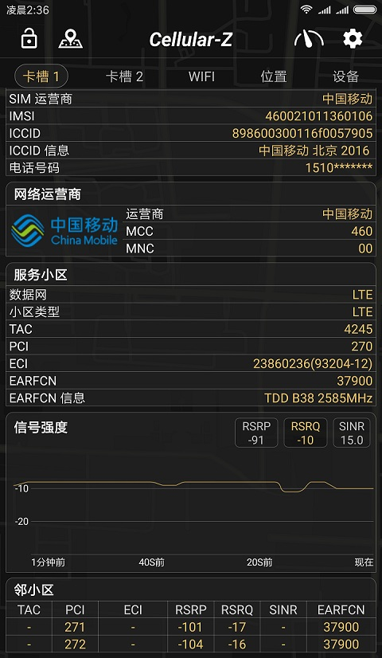
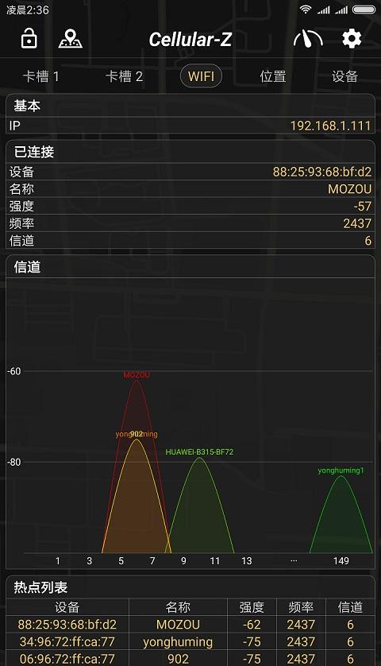
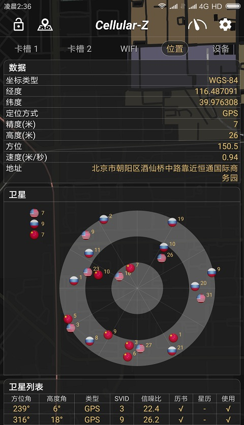
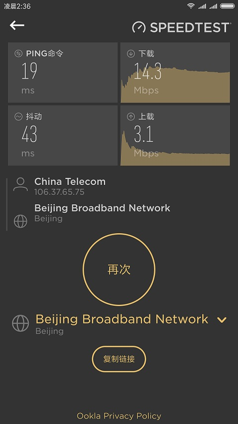
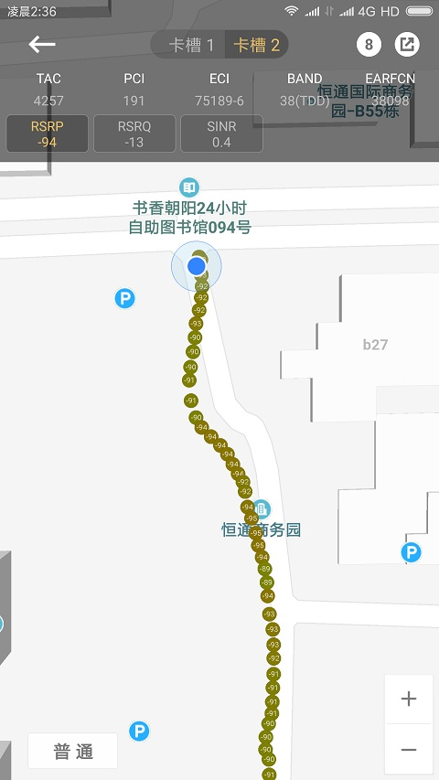
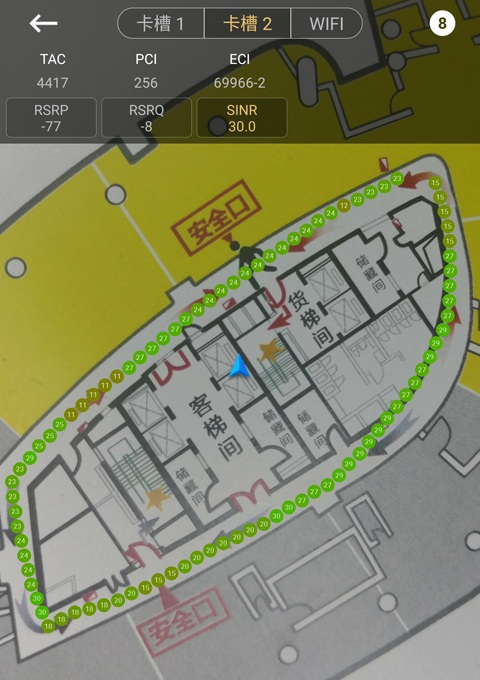
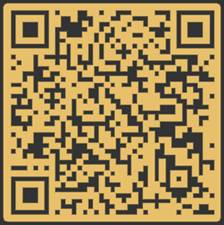

Cellular-Z发布一年了,在这一年里也积累了很多用户,获得了不少同学们的喜爱,但是一直以来都没有一个详细的功能介绍出来,有些功能做出来了,大家却不清楚什么意思或者怎么使用,现在我在这里对APP功能一一介绍,让喜欢Cellular-Z的同学们更了解它,更好的利用它,希望这个介绍来的不是太晚。

这部分也是网优同学们最关心的功能了,对比其他APP,Cellular-Z优势主要有下面几点:
目前APP在不同网络下可以获取的参数如下:

Cellular-Z WiFi模块可以显示附近WiFi热点的详细信息及信道图,Cellular-Z的信道图是专门开发的特殊图表,支持2.4GHz及5GHz不同WiFi热点显示到同一个信道图上,对于空白比较长的信道间隔做了省略处理.

位置模块采用高德定位,输出坐标为WGS-84全球标准
定位类型
| GPS | CELL | WIFI | CACHE | OFFLINE | UNKNOWN |
| 卫星 | 基站 | WIFI | 缓存 | 离线 | 未知 |
卫星类型
| GPS | 北斗 | GLONASS | QZSS | GALILEO | SBAS |
| 美国 | 中国 | 俄罗斯 | 日本 | 欧盟 | 星基增强系统 |

Cellular-Z内置Ookla SpeedTest速度测试,Ookla SpeedTest是世界上最权威的速度测试应用,在全球各地都有服务器,支持查看Ping值、下载、上传速度,所以我把Ookla SpeedTest集成进来,方便大家随时测试网速.



http://a.app.qq.com/o/simple.jsp?pkgname=make.more.r2d2.cellular_z
邮箱 : heiljersey@163.com
QQ群 : 686600841